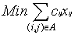
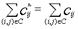

The minimum cost flow problem is a special case of the general linear programming problem. It plays a major role in the area of network optimization. With the special structure of a network, researchers can develop more efficient algorithms to solve its equivalent LP formulation. The network simplex algorithm, for example, is designed to take advantage of the network structure and turns out more efficient than the general simplex algorithm as applied to network flow problems.
Although the network simplex algorithm performs well in practice, with standard pivot rules it may have an exponential numbers of pivots. The algorithm discussed in this thesis, called the premultiplier algorithm, is the first polynomial time primal network simplex algorithm for the minimum cost flow problem. Its number of pivots is min {O(nmlognC), O(nm2logn)}.
In this thesis, we implement the premultiplier algorithm. First we implement the nonscaling version of this algorithm which runs in pseudopolynomial time. We have also implemented two scaling versions of this algorithm. Finally we compared all thesis codes with Lee's original network simplex code [3] and Goldberg's cost-scaling network simplex code called "cs2 for each [4]. The comparison is done on seven problem families produced by 2 generators, NETGEN and GRIDGEN. All of the codes are complied and run by gcc on a SUN SPARC station1 5.
The structure of this thesis is organized as follows. Chapter 2 outlines the background of the premultiplier algorithm and original network simplex algorithm. Chapter 3 explains details of implementing the premultiplier algorithm. Chapter 4 describes the setup and results of our testing. We make our conclusions and discuss more insights into the premultiplier algorithm in Chapter 5.
Here we review some definitions and notations of networks and minimum cost flow problems. Then we outline the original network simplex algorithm and the premultiplier algorithm. For more detailed information, please refer to [1] and [2].
Consider a directed graph G=(N,A) where N is a set of n nodes and A is a set of m arcs. The direction of (i,j) is from the tail node i to the head node j. Each arc has a cost cij, a capacity uij, and a lower bound lij. The flow in arc (i,j) is xij. Associated with each node i, an integer number b(i) represents its supply/demand. If b(i)>0, we say node i is a supply node; if b(i)=0, we say that node i is a transshipment node; and we say that it is a demand node if b(i)<0. Figure 2.1(a) shows an example of a minimum cost flow problem over a network. The minimum cost flow problem is to send flow from supply nodes to demand nodes under the capacity constraints with minimum cost.
The linear programming formulation of minimum cost flow problem is as follows: --------------------------------(21)
The flow xij is a primal variable in the LP formulation. Each node has an associated potential p, which represents dual variables for each constraint of equation (2.2). This node potential is also called a vector of "premultipliers" in the premultiplier algorithm. The reduced cost of arc (i,j) is denoted by cpij=cij-pi+pj. It can be shown easily that for a directed cycle C,
 .
The residual network G(x) can be constructed as follows: for a feasible flow vector x, we replace each (i,j) in the original network by two arcs, (i,j) and (j,i), where (i,j) has cost cij and residual capacity rij=uij-xij, (j,i) has cost -cij and residual capacity rji=xij. A residual network only contains arcs with positive residual capacity. If we add node 0 to the network in Figure 2.1(a), and add uncapacitated2 arcs (1,0), (2,0), (3,0) and (0,4) with big cost C', we can send 5 units of flow from the supply node 1 to demand node 4 via node 0. The corresponding residual network for this feasible flow is illustrated in Figure 2.1(b).
A spanning tree T is a connected subgraph of G with (n-1) arcs. In the network simplex algorithm, T represents the basis. We also denote the arcs belonging to T as tree arcs, and arcs not belonging to T as nontree arcs. A spanning tree is hanged from a node called root. For any spanning tree T with a root v, we let T(v) denote a subgraph of G(x) which is a directed spanning in-tree where all arcs are directed towards root v. In T(v), every node has a directed path upward to root v. An arc (i,j) in T(v) is upward if j lies in the path from i to v, and downward otherwise. If a tree arc (i,j) has zero residual capacity, only (j,i) will be in G(x) by definition. In T(v), however, we will add (i,j) with zero residual capacity. Therefore, every tree arc (i,j) becomes 2 arcs, (i,j) and (j,i), in T(v) and we can always find a directed path upward to v from every node.
In a rooted spanning tree, each node i has a predecessor denoted by pred(i). The root node has no predecessor, and we denote this root as pred(root)=-1. There are several ways to define the spanning tree structure. Here we use the FirstChild and RightSibling structure to represent the rooted spanning tree. [6] We describe it as below. As with other tree data structures, the data structure we use has the advantage of O(n) space for n node rooted tree. Moreover, this representation of trees seems more efficient for the premultiplier algorithm. The tree structure of Fig.2.1(c) is described in Table 2.1 and Table 2.2. In this representation, each node i has 3 pointers pointing to 3 adjacent nodes: (1) pred(i) (2) FirstChild(i) and (3) RightSibling(i). The pred(i) points to the predecessor of node i. The FirstChild(i) points to the leftmost child of node i, and the RightSibling(i) points to the sibling of i immediately to the right. If node i has no child, we set FirstChild(i)=-1; if node i is the rightmost child of its predecessor, then RightSibling(i)=-1. For our convenience, we also store the tree arc connecting node i and pred(i) as pred_arc(i). Since the root node has no predecessor, we set pred_arc(root)=-1. This is useful for changing the tree structure, especially when there are multiple arcs between 2 nodes. We store the number of arcs adjacent to node i as n_arc(i).
For each node, there is an associated arc adjacency list where we store all the arcs adjacent to this node in some fixed order. We denote the first arc in the arclist associated with node i as FirstArc(i). We also use an arc pointer called CurrentArc(i) to represent the arc we are scanning when we look at node i. When the CurrentArc(i) reaches the end of the arclist of node i, we say that node i has been exhausted, that is, we have scanned all the adjacent arcs of node i, and we set CurrentArc(i)=-1.
--------------------------------------------------
Arc no. tail head cost capacity reduced tree
cost
--------------------------------------------------
1 1 2 1 4 1 No
2 1 3 2 2 2 No
3 2 3 1 3 1 No
4 2 4 3 4 3-2C' No
5 3 4 1 3 1-2C' No
6 1 0 C' M 0 Yes
7 2 0 C' M 0 Yes
8 3 0 C' M 0 Yes
9 0 4 C' M 0 Yes
--------------------------------------------------
Table 2.2: node information in Figure 2.1(b)
--------------------------------------------------------------
Node i pi pred(i) First- Right- pred_ n_arc(i)
Child(i) Sibling(i) arc(i)
--------------------------------------------------------------
0 C'+1 -1 1 -1 -1 4
1 2C'+1 0 -1 2 6 3
2 2C'+1 0 -1 3 7 4
3 2C'+1 0 -1 4 8 4
4 1 0 -1 -1 9 3
--------------------------------------------------------------
To start the algorithm, we add a supernode with zero supply. For each supply or transshipment node, we construct an artificial arc starting from it pointing to the supernode; for each demand node, we construct an artificial arc from the supernode pointing to it. All these artificial arcs have an arc cost C'=1+nC where C=max{|cij| | (i,j) belongs to A}, and each has capacity U=INFINITY. We also assign the node potential pi for this supernode to be C'+1, for each demand node to be 1, and for each supply node to be 2C'+1. With this arrangement of node potentials, the initial tree arcs will have zero reduced cost. There is more than one way to assign the node potential p. The reason we assign pi this way is for the convenience of using the scaling premultiplier algorithm. Now we will have an initial feasible spanning tree flow. (It is feasible for the network flow problem obtained after adding artificial arcs.) Figure 2.1(b) illustrates the initial residual network for the example in Figure 2.1(a). Figure 2.1(c) is the initial spanning tree for the same example.
Note that by adding one supernode and n artificial arcs, we become solving a new problem with larger dimension. In order to avoid an artificial arc with positive flow appearing in the final optimal solution, we assign a big cost C'=1+nC to it. However, for the network flow problems that we considered, assigning C'=1+nC occasionally causes some overflow problems. For the network generators analyzed in this thesis, we assign C'=10 (C+1). This did not lead to any overflow problems, nor did it make some artificial arcs appear in the final optimum solution.
In the following two sections, we will describe the original network simplex algorithm and the premultiplier algorithm.
The network simplex algorithm is a variant of the simplex algorithm for the linear programming problem. To solve the minimum cost flow problem, it begins with an initial feasible flow. A spanning tree structure is a partition all the arcs into 3 groups-T, L and U. T is the set of arcs in the spanning tree representing the basis. L and U denote the nonbasic arcs with flow at their lower bound and upper bound respectively. The flow x associated with the spanning tree structure can be obtained as follows:
(T,L,U) is an optimal spanning tree structure for the minimum cost flow problem if it is feasible and with some choice of node potential vector p, the reduced cost cpij satisfies the following conditions:
In the original simplex algorithm for LP, the reduced cost for each basic variable remains zero in each iteration. Similarly, the reduced cost of spanning tree arcs remains zero in the network simplex algorithm. In each iteration, the network simplex algorithm tries to find a nonbasic arc with negative reduced cost and positive residual capacity in the residual network as an entering arc to pivot. Adding the entering arc will create a basic cycle W with negative reduced cost {Sum(cpij) along all (i,j) belongs to W} for a unit flow. Along the basic cycle W, we can push flow as much as possible till we find a blocking arc. When we send flow along the basic cycle, we decrease the residual capacity for those arcs with the same orientation as the cycle, and increase the residual capacity for those arcs with the opposite orientation. When an arc in the basic cycle reaches its upper bound or lower bound, we say this arc is saturated and can be pivoted out the basis. If the flow around the cycle is zero in the pivot, we say this pivot is degenerate. A degenerate pivot does not help decrease the total cost of the problem. To avoid this degeneracy, we can use a special tree structure called strongly feasible spanning tree. However, in the implementation described in this thesis, we do not apply this concept to avoid degeneracy. We pivot out the first blocking arc as the leaving arc in the basic cycle.
After the leaving arc is pivoted out, we have a new tree structure. To maintain the basis, we have to update the node potentials so that the basic tree arcs will have zero reduced cost. The algorithm keeps pivoting in and out arcs and updating node potentials till there is no nonbasic tree arc with negative reduced cost in the residual network. Then we have reached the optimality condition.
Note that in the original network simplex algorithm, we have to update node potentials every time after the pivot. The advantage of maintaining node potentials is to evaluate the reduced cost of arcs and get the entering arc easily. However, this comes with the price that we have to maintain the node potentials at each stage.
A pseudo code for network simplex algorithm is described as follows:
Algorithm network simplex
begin
For the procedure in the original network simplex algorithm, we do not need to change the root of spanning trees. There are many ways to identify the basic cycle W, depending on the data structures used for the network. For example, Lee's code, which is tested in this thesis, stores depth, thread, and predecessor for each node. It identifies W by using depth and predecessor [3].
In this new simplex algorithm, we will maintain a set of node potentials called "premultipliers for each [2]. The definition of premultiplier is as follows:
Consider a node i such that all arcs lying in the path from i to root have zero reduced cost. Referring to the definition of premultiplier, we can reroot the spanning tree at node i without violating the definition of premultiplier. By using this characteristic of premultiplier, we define the eligibility of node and arc as follows:
By pivoting in an eligible arc (i,j), we can construct a basic W composed of 3 parts: the path from node j upward to the apex of W, the path from the apex downward to node i, and arc (i,j). The apex lies in the path from node i to the root. The reduced cost in the path from node j upward to the apex is nonpositive by definition 1. The reduced cost in the path from the apex to node i is zero because i is eligible. Therefore, we try to find an eligible arc to be the entering arc in the pivot procedure, because pushing a unit flow around W will induce a negative cost thus decrease the total cost.
The initialization procedure and the pivot procedure in the premultiplier algorithm are the same as the original network simplex algorithm. However, the premultiplier algorithm uses a very different rule for updating node potentials. Unlike the original network simplex algorithm, the premultiplier algorithm does not update node potential every time after the pivot, instead, it updates node potentials only when it is unable to find any eligible arc. Also, the premultiplier algorithm may change the root after a pivot in order to maintain a vector of premultipliers. We are going to introduce two versions of the premultiplier algorithm: the nonscaling version and scaling version.
Algorithm nonscaling premultiplier
begin
Procedure simplex-pivot(k.l)
begin
Procedure modify-premultipliers
begin
Note that we reset root twice in the procedure simplex-pivot(k,l). In the first reset, the vector of premultipliers remains the same. By hanging up k as the root, it is easy to identify the basic cycle W. Then we can send flow along W as much as possible till we find the leaving arc (p,q). Note that (p,q) is a tree arc in the residual network with the same orientation as W.
In the procedure modify-premultipliers, first we have to identify the tree arc adjacent to an eligible node with the smallest absolute value of reduced cost, then adding that absolute value to the potentials of all eligible nodes. If not all the nodes are eligible, D is always positive since the upward arc (i,j) in Q will always has nonpositive reduced cost. D=0 if and only if all nodes are eligible. Note that we can get this D in the procedure simplex-pivot if we perform a search in the spanning tree. By adding D to all the eligible nodes, all the upward tree arcs will still have nonpositive reduced cost, therefore, the resulting vector of node potentials will also be a vector of premultipliers.
Since we don't increase the node potential until we can't find any eligible arc, after we increase the node potentials, the algorithm will either find an eligible arc and perform a simplex-pivot or not find any eligible arc and modify the premultipliers. In the latter case, the number of eligible nodes will increase since by adding D to all eligible node, at least the reduced cost of (i,j) will become zero and node i becomes eligible. The premultiplier algorithm ends when all nodes become eligible and no eligible arcs can be found.
An example of applying the nonscaling premultiplier algorithm for the network in Figure 2.1 is illustrated in Figure 2.2. Note that C=3 and C'=10(3+1)=40 in this example. More detailed procedures of this nonscaling premultiplier algorithm will be described in Section 3.1.
First, we will introduce some new definitions for the scaling premultiplier algorithm. Suppose that p is the set of premultipliers obtained immediately after a modification of premultipliers during an e-scaling phase. Let p denote the premultipliers at the beginning of the e-scaling phase.
Algorithm generic scaling-premultiplier
begin
Procedure improve-approximation(x, e, p)
begin
Procedure modify-e-premultipliers
begin
This scaling version uses the same technique to get the initial basic feasible tree T(v) as the nonscaling premultiplier algorithm. We can determine the corresponding flow x and vector of premultipliers p. In the beginning of the e-phase, all nodes are awake since no premultiplier is changed. Then, starting from the root node, we look for an eligible awake node. According to definition 8, an admissible arc can be detected only from an eligible and awakened node. Once we find an admissible arc, we treat it as an entering arc and continue the procedure simplex pivot. The procedure simplex-pivot is the same as in the nonscaling premultiplier algorithm. The algorithm will continue the procedure simplex-pivot till there is no eligible and awakened node.
When the algorithm could not continue pivoting, we have to modify the premultipliers. We update N* by deleting those eligible nodes that were exhausted since we are going to increase their premultipliers. Therefore, they won't be in N* any more in this e-scaling phase. If N* is empty, we move to the next scaling phase, and continue the iterations of pivoting and updating premultipliers.
To update the premultipliers, we need to calculate two values: D1 and D2. D1 is the same as the D used in the nonscaling version. To obtain D2, we have to scan all the current eligible nodes, calculate the minimum value that adding it will make the premultipliers achieve the nearest multiple of e/4. By adding D=D2
The algorithm will go to the next scaling phase when N* is empty and terminate if e < 1/n. An example of the scaling premultiplier algorithm for the network in Figure 2.1 is illustrated in Figure 2.3. More detailed procedures of this generic scaling premultiplier algorithm will be described in Section 3.2.
If we take a closer look at the example in Figure 2.3, we find that the generic scaling premultiplier algorithm will often get D2 and keep updating D2 many times without finding any admissible arc. For example, iterations 3 (17)-(19), (20)-(22), (23)-(25), and (26)-(28) in Figure 2.3 are the same. They are just looping around those eligible nodes to find an admissible arc. Since the purpose of updating the premultipliers is to find an entering arc, we do hope not to spend too much time in modifying premultipliers without getting any admissible arc. This intrigued us to develope another scaling premultiplier algorithm using a different rule to update the premultipliers.
The new algorithm differs from the original one only in the procedure modify-e-premultiplier:
Procedure modify-e-premultipliers
begin
The generic scaling premultiplier algorithm only scanned eligible nodes. This modified algorithm scans all the adjacent nontree arcs for each eligible node to identify the minimum value that adding it to the premultipliers of its tail will make this nontree arc admissible. We let tc(i) be the smallest value that adding it to pi will at least make one flowable 4 nontree arc with reduced cost <-e/4. However, to make that arc become admissible, we also need to reawaken node i. If D=D2, we know we will find an admissible arc when we scan node i in the next iteration. Otherwise, we know we won't be able to find any admissible arc for current eligible nodes, thus we can only increase the number of eligible nodes by adding D=D1.
This approach will avoid those unprofitable updating premultipliers procedures, and make us find an admissible arc earlier for most of the cases. Whenever we add D=D2, we know we will find an admissible arc later and thus save much time in looping iterations. An example of this modified scaling premultiplier algorithm for the same network is illustrated in Figure 2.4. More detailed procedures of this modified scaling premultiplier algorithm will be described in Section 3.2.
Comparing Figure 2.3 with Figure 2.4, we find this modified scaling premultiplier algorithm avoids many unprofitable iterations. For example, the iteration (4) in Figure 2.4 is the result of the iterations (4)-(7) in Figure 2.3; iteration (7), (8), (9), (12) and (14) in Figure 2.4 correspond to iterations (10)-(12), (13)-(14), (15)-(28), (31)-(34), and (36)-(39) in Figure 2.3 respectively.
This modified algorithm scans for admissible arcs before updating premultipliers. Therefore, the running time for each iteration of modifying premultipliers is O(m) instead of O(n) in the generic scaling premultiplier algorithm. Although O(m) is worse than O(n) theoretically, this modified scaling premultiplier algorithm always works much better than the generic algorithm in our computational tests.
Next, we are going to describe our implementing details.